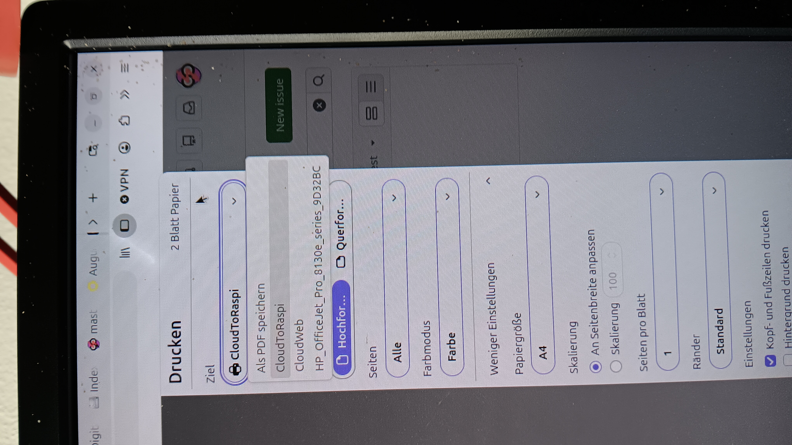
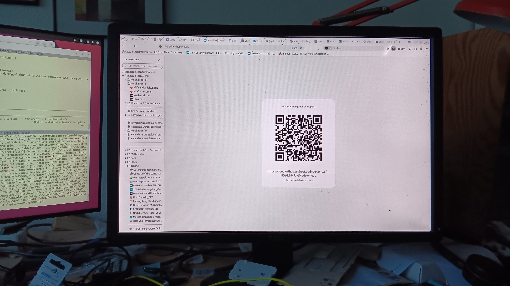
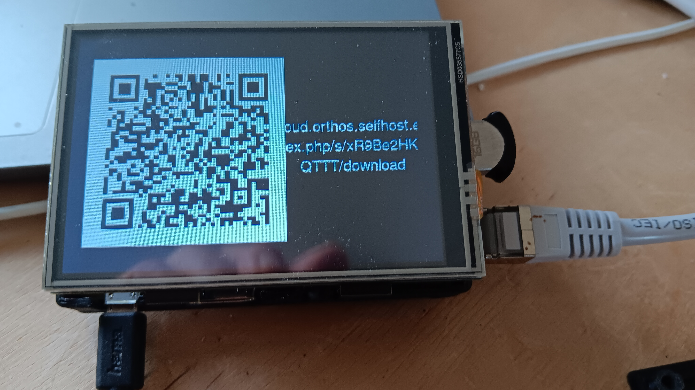
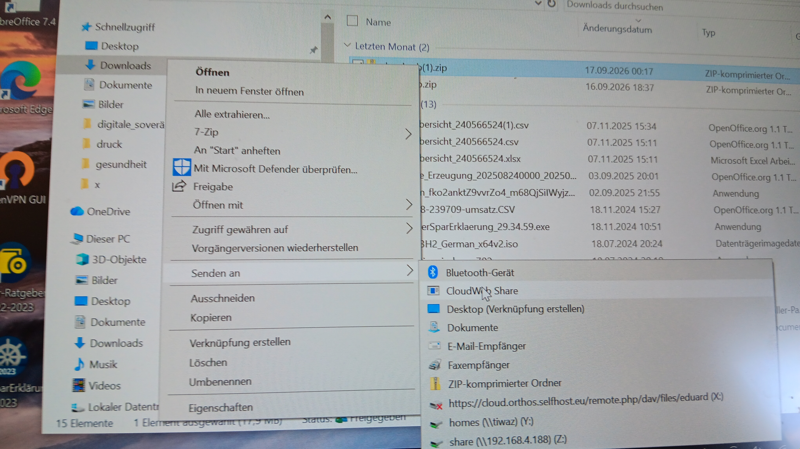
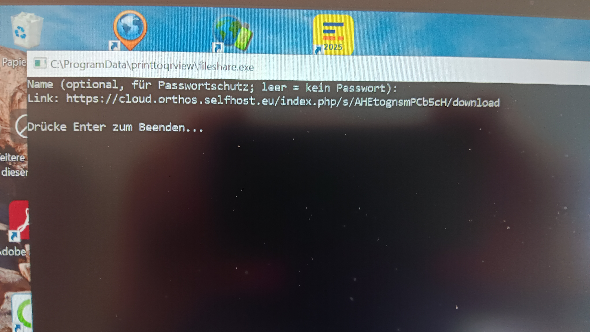
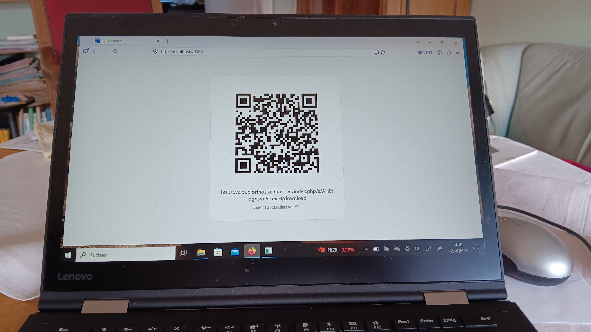

Usage
Printing a file
With the CUPS queues set up (see
Installation), any application's print
dialog can target CloudToRaspi (shows the result on a
Raspberry Pi display) or CloudWeb (shows the result in a
browser) like any other printer:

The same two queues can also be used without a print dialog, via
scripts/share.sh path/to/file (defaults to
CloudToRaspi, PRINTER=CloudWeb scripts/share.sh
... to pick the other) or
scripts/share-to-web.sh path/to/file (always
CloudWeb).
Seeing the result
On CloudWeb, the QR code and link show up in a browser
tab left open on cloudweb's page - any device on the LAN,
including a phone:

On CloudToRaspi, the same QR code and link show up on the
attached Raspberry Pi display:

Either way, the link also always gets logged (see
/var/lib/myshare/tmp/links.log for the CUPS backend), so
the display is a convenience, not the only way to retrieve the link.
Windows: Explorer "Send to"
After installing the Windows "Send to" entry (see Installation: Windows), right-click any file and choose "Send to" → "CloudWeb Share":

A console window opens, optionally asks for a name (for password protection, see below), and then prints the resulting share link:

If a cloudweb instance is running on the same machine,
the QR code also shows up there automatically:

Sharing without a printer
sendfile path/to/file- same upload+share+QR flow, directly from the command line, no CUPS queue needed.webshare- an HTTP entry point so, e.g., a phone on the network can trigger the same flow without its own Nextcloud credentials (see Installation: Android / Termux for the recommended setup).- Dragging a file onto the Explorer "Send to" entry on Windows
(
fileshare.exe, see above).
Password-protected shares
scripts/share-to-web.sh path/to/file Name (or the Windows
fileshare tool, which prompts for the name interactively)
additionally protects the share with a Nextcloud share password. The
recipient needs both the Name and a short code shown next
to the link/QR code to derive the real password - without a name
argument, the share stays unprotected as before. See the
README section "Sharing arbitrary files via the CUPS queue"
and internal/sharepassword for how the password is
derived.